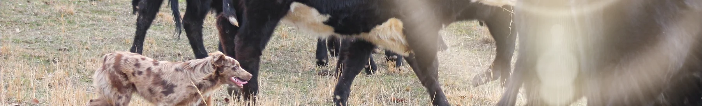

In August of 2022 I started offering full time Stockdog training. I have spent years working with multiple breeds, learning from other handlers/trainers, and attending stock dog trials. I have trained several working trial champions and obtained multiple titles on our personal dogs. However my primary focus has been on using dogs for real life farm work and they work daily helping us manage our livestock. Most people understand how they want their livestock to be worked but they do not understand how to communicate with their dogs in order to make it happen. Usually clients come to me with various issues of the dogs just chasing after livestock or not paying attention to what their owners are saying. We focus on moving livestock appropriately with basic farm work (not running and chasing) and skills first. Over time if you wish to trial we can assist with that training also.
We do private lessons on ducks, sheep, and/or cattle. Herding lessons with instruction are $50 for 1 hour session for dogs/pups 6 months and older per dog. Instinct testing is available for $35 for 1/2 hour for pups 6 months and younger per dog. If you want to train your dog on new stock/new surroundings with no instruction the price is $25 an hour per dog (per stock-cattle/sheep/ducks). **Animal safety is first priority and you must be experienced**
Standing at Stud: $400 LFG
Cowboy is a 2010 model bay roan stallion, 15hh and naturally gaited. Reg. TWHBEA. This boy is truly a rare find. His bloodline boasts some old time bloodlines that are hard to find. He was bred in Montana and his parents were selected for their versatility. He has a square going gait which will work perfectly for those pacey bred mares. He has the potential and the breeding to become a versatility champion like his grandsires. Genetic code: AaEeRr
We are a small farm based in South Central Kentucky. We raise quality Tennessee Walking Horses, Working Australian Shepherds, and a variety of farm animals. We acquired our first Walking Horse in 1991. We now stand an amazing stallion and own some really nice mares. All have wonderful temperaments, natural gaits, and great conformation. We have focused our breeding program on sane, people friendly horses that excel in versatility. We started out with our first Australian Shepherd about the same time as our first Walking Horse. Their intelligence and loyalty captured our hearts and since then we have dedicated our farm to preserving the original Australian Shepherd that still works livestock, hangs out with the family, and is unusually marked. All of our Aussies have natural herding instincts and extremely intelligent. First and foremost in the breed standard is the ability to work livestock. We are extremely particular about what we use in our breeding program